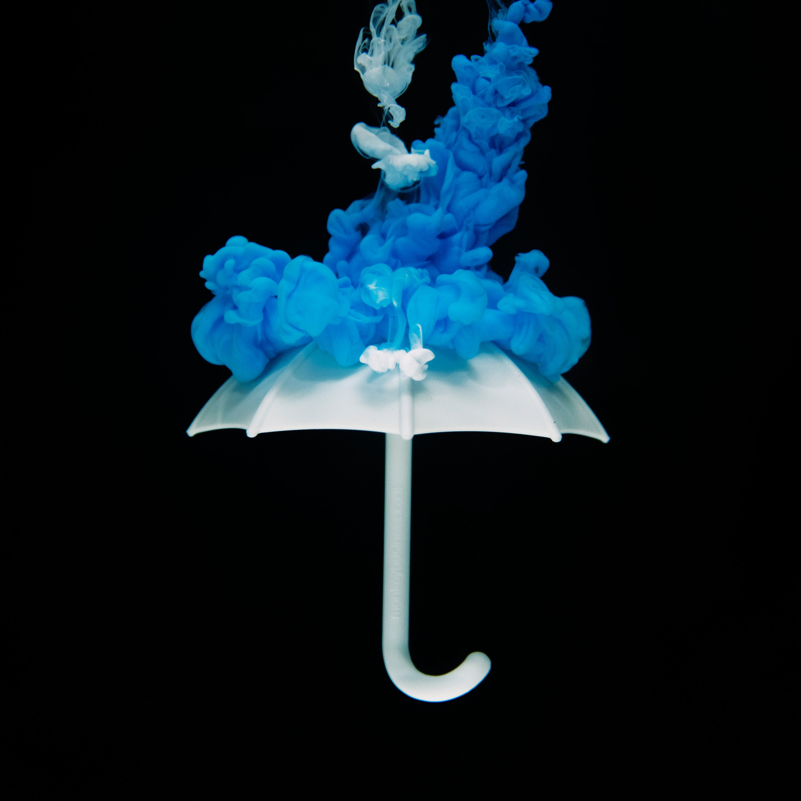
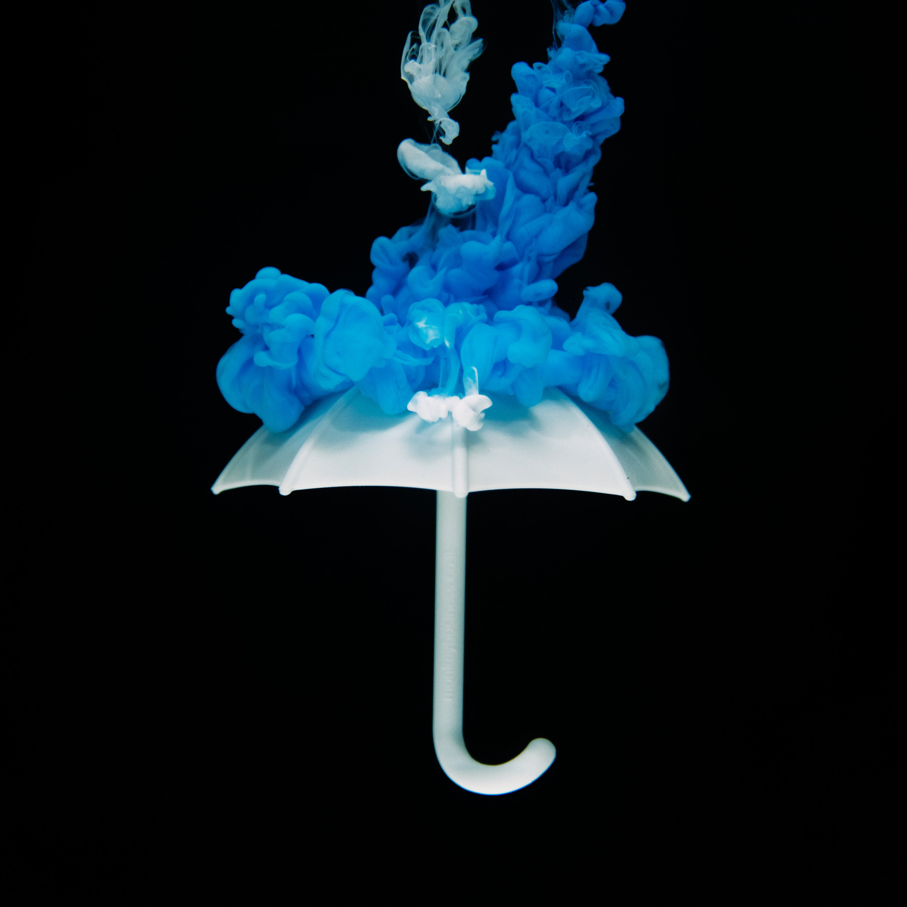

Why dont we finish our discussion on red, we might as well finish it. We’ve already established that our brain associates red with danger, but there are a few other surprising facts about the way red makes us act. For example, if you are a woman, wearing red can benefit you. A study conducted in 2012 found that waitresses who wore red were tipped between 14.6 and 26.1% percent more by men compared to those wearing other colors. The reason for this ties into a fact you have probably heard before: Red increases the physical and sexual attractiveness of women. But other than raising your level of attractiveness, red can also increase the speed and strength of your reactions. A study conducted at the University of Rochester found that when humans see red, their reactions become more forceful. However, red can also affect your reactions negatively. The study also found that red increases anxiety levels, so an athlete who is competing against someone who is wearing red tends to lose, and a student who is exposed to red before an exam performs worse. Red is known to increase aggression, so consumers are more likely to bid higher amounts in online auctions. On the other hand, if you aren’t going to place your item up for auction and are instead going with the “Buy It Now” option, avoid red at all costs. Researchers found that consumers were less likely to buy the object (without negotiating) when the background was red.

Orange is an interesting color. It isn’t associated with a single feeling, but it can affect us in numerous ways. Firstly, orange is a color we tend to associate with warmth. If a room is painted orange, we are more likely to assume the temperature is higher than it actually is. Warmth tends to relax our muscles, and in a quantitative study in 1979, researchers found that orange has an “endocrine-based weakening effect on muscle functioning,” effectively relaxing us in ways we can directly measure. Orange is also thought to be associated with good value. Stores with orange logos, such as Home Depot, are perceived as providing high-quality, low-cost goods to customers. Similar to red, orange is also associated with danger, though in the case of orange, it is non-immediate danger. This could be why traffic delay signs and road hazard signs are orange.
Yellow is associated with feelings of joy, openness, and friendliness. Color psychologists like Eiseman and Wright call yellow “the strongest color,” since it is believed to be associated with emotions, self-esteem, and creativity. The emotion most commonly thought to arise from being presented with the color yellow is happiness. This is why it is associated with comedy, hope, and optimism and why we’re all so much happier on clear, sunny days. (could this be the reason emojis are yellow?)
.jpg)
Green-the beautiful color of lavish forests, the phone app on your smartphone, and that highlighter that came in a pack of four but you never used... Psychologists have found that green can increase creativity. They’ve also found that green is associated with complex thinking and higher-level thought as well as relaxation, inward focus, and calm actions. When we think of green, we think of nature and growth, so it’s not surprising that we assimilate those feelings toward ourselves by associating green with our own personal or professional growth. Thus, researchers recommend painting work spaces green, since it can make employees more productive.
Blue tends to be the opposite of red. It is the second most studied color, after red. Light blue is the color of calmness and concentration. It has also been found that light blue colors tend to lower blood pressure, which could explain why we feel more calm around nurses and doctors who are wearing light blue scrubs. This might also be the reason clinics and hospitals sometimes have light blue walls. Light blue is also the color we associate with openness and peace. The universal symbol for peace (used on just about every International Day of Peace banner) is of a white dove holding a small branch in front of a light blue background.\ Going back to the discussion between the two, one particular study found that although red boosts performance on detail-oriented tasks (such as memory retrieval), while blue environments caused participants to produce twice as many “creative outputs” as when they were in a red-dominated environment.

Dark blue creates similar effects to light blue. It has also been found to calm the nerves of those who are exposed to it, but it also has some other bizarre effects on your brain and body. A correlation was found between strong blues and clear thoughts. This correlation was then used in Japan, where blue street lights were installed in hopes of preventing crimes on certain streets as well as suicides at popular railway stations. Encouraging clearer thoughts seems to be working, as no suicide attempts have occurred at a particular station after the installation of the blue lights, and the number of crimes has decreased by nine percent in other blue-illuminated areas. This same logic was used in London, where Blackfriars Bridge was painted blue to reduce the number of people who jump from it.
Purple is a strange color to analyze. It is a mixture of blue and red, two contrasting colors, in terms of how they affect people. Interestingly enough, purple is not studied as much by color psychologists. One study found that purple made rooms seem colder than what they were, similar to how orange made rooms feel warmer. Purple thus has the opposite effect, tensing muscles instead of relaxing them. Since there is a lack of scholarly articles written about the effects of purple, I will leave you with an interesting fact: Women often list purple as their favorite color, while men often list it as their least favorite.
Once, it was the quintessential baby girl color. Now, it’s the color of every frat guy’s shorts. Pink is extremely interesting. It has direct, measurable effects on the way people behave. Researchers found these behavior-altering effects in what psychologists call “pink prisons.” Surprisingly, they mean exactly that. A 1979 study found these bizarre effects when prisoners were placed in a cell painted bright bubblegum pink. The inmates immediately became less aggressive, and their muscles relaxed. Their feelings of restlessness and frustration also decreased significantly. Today, 20 percent of prisons in Switzerland have at least one pink cell reserved for unruly prisoners. Psychologists also tried to see if the calming effects of pink worked on kids. The San Bernardino County Probation Department in California tried to see if they could replicate the pink prison experiment with children. They found that it only took ten minutes for children placed in the pink cell to stop yelling and banging. They also found that most children even fell asleep in that time frame. Now, the next time you’re wondering how to calm down your five-year-old, think about how some pink paint could make your life a little bit easier.
It’s no surprise that white is associated with a lack of aggression. However, did you know that men who wear white are perceived as more attractive? A 2010 study found that men wearing a simple white T-shirt were seen as being more attractive by women. It is a similar concept to how women are viewed as more attractive when wearing red. White is also the color we associate with cleanliness and purity. This is also why hospitals tend to have white floors and white ceilings. Researchers have also found that white can actually lead to boredom. Spaces that are monochromatically white tend to hold our attention span for a shorter time than colorful areas and tend to prompt us to reflect on our own thoughts, separating ourselves from the environment we’re in. This is why researchers suggest retail stores use color to be interesting, rather than aiming for the sleek, all-white look.
Black is actually the absence of color. We’re scared of black when we’re kids, but we use it to appear slimmer when we become adults. However, black interacts with our brains in interesting ways that we might not realize. Black environments tend to lead to efficient outcomes, and black clothing tends increase a woman’s level of attractiveness and perceived fashionableness. However, black’s most interesting effect is that it can make you more aggressive. We tend to associate black with death and evil, and due to this, researchers in a 1988 study concluded that we tend to become aggressive when shown the color black. It has also been found that people were more likely to pay more for products when they were advertised in a way that incorporated the color black heavily, such as in a black-and-white commercial or billboard.

.jpg) 
